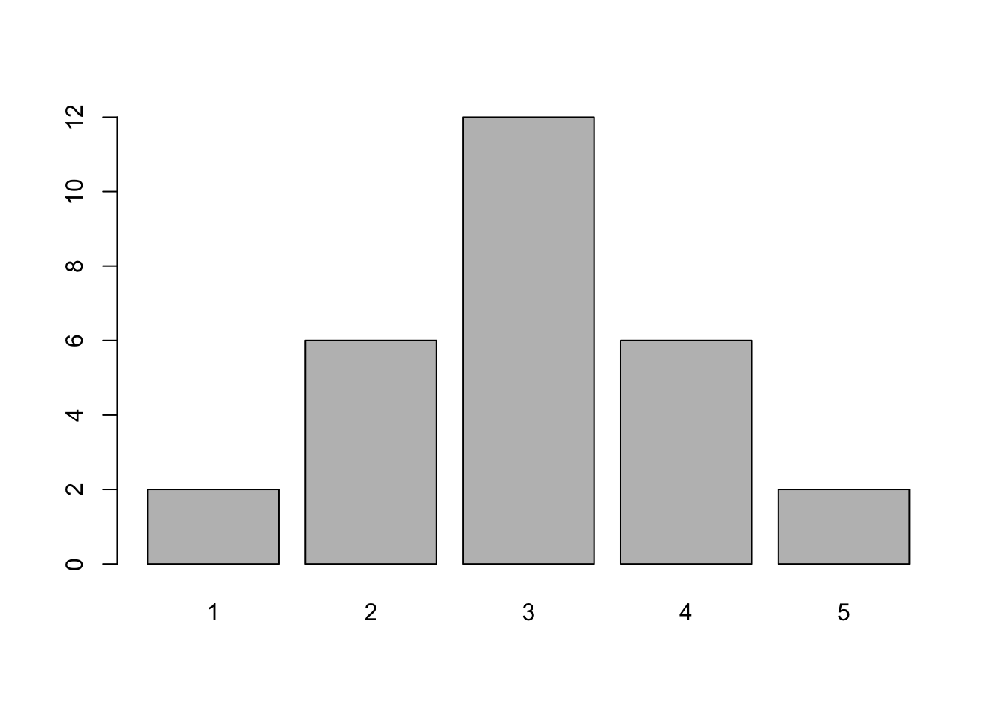

3 Övningskompendium Deskriptiv Statistik
3.1 Deskription
Uppgift 16
betyg <- c(1, 4, 4, 3, 2, 3, 3, 3, 5,
2, 3, 3, 3, 2, 4, 4, 3, 1,
2, 5, 3, 3, 4, 2, 3, 4, 2, 3)mean(betyg)
## [1] 3
median(betyg)
## [1] 3Det finns faktiskt ingen inbyggd funktion i R för typ-värde(!), men vi kan använda table() för att hitta vad vi söker. 3 förekommer 12 gånger.
table(betyg)
## betyg
## 1 2 3 4 5
## 2 6 12 6 2x <- table(betyg)
barplot(x)
Uppigift 17
husdjur <- c(rep(0,20), rep(1,15), rep(2,10), rep(3,5))
mean(husdjur)
## [1] 1
median(husdjur)
## [1] 1x <- table(husdjur)
plot(cumsum(x), # cumsum för cumulative sum
type = "S", # "S" för "steps"
xlim = c(0,4), # Undre och övre gräns för x
ylim = c(0,50), # Undre och övre gräns för y
xlab = "Antal Husdjur" , # Text på x-axeln
ylab = "Summa Antal Familjer") # Text på y-axeln
segments(x0 = 0, y0 = 0, x1 = 0, y1 = 20)
segments(x0 = 0, y0 = 20, x1 = 1, y1 = 20)
segments(x0 = 0, y0 = 25,x1 = 1, y1 = 25,col = "red",lwd=2,lty = 6)
arrows(x0 = 1,y0 = 25,x1 = 1,y1 = 0, col = "red",lwd=2, lty = 6)
Uppgift 18
löner <- c(341000, 193000, 167000, 167000, 156000,
154000, 148000, 148000, 148000, 148000)
mean(löner)
## [1] 177000
median(löner)
## [1] 155000
table(löner)
## löner
## 148000 154000 156000 167000 193000 341000
## 4 1 1 2 1 1
barplot(table(löner)) # Sned fördelning -> använd median
Uppgift 21
Vi har följande tabell
| Antal Olycksfall per dag | Frekvens |
|---|---|
| 0 | 21 |
| 1 | 18 |
| 3 | 10 |
| 4 | 1 |
Givetvis kan vi skapa vektorn och använda mean()och sd()
tabell <- c(rep(0,21),rep(1,18),rep(2,7),rep(3,3),rep(4,1))
mean(tabell)
## [1] 0.9
var(tabell)
## [1] 0.9897959Men säg att vi hade fått en stor dataframe, och det hade varit för mycket jobb för att skriva en massa rep(). Det vill säga, säg att någon gav oss df nedan
df <- as.data.frame(cbind(c(0,1,2,3,4),c(21,18,7,3,1)))
colnames(df) <- c("olycksfall", "frekvens")
df## olycksfall frekvens
## 1 0 21
## 2 1 18
## 3 2 7
## 4 3 3
## 5 4 1Istället för att återskapa tabell ovan (som förvisso är väldigt enkelt - bara använd table()), så kan vi gå den långa vägen och använda.
\[\bar{x} = \frac{\sum{f_i x_i}}{n}\]
\[s^2 = \frac{\sum{f_i x_i^2}-\frac{\sum{(f_i x_i)}^2}{n}}{n-1}\]
n <- sum(df$frekvens)
f = df$frekvens
x = df$olycksfall
medelvärde = sum(f*x)/n
varians = (sum(f*x^2) - sum((f*x))^2/n) / (n-1)
medelvärde
## [1] 0.9
varians
## [1] 0.98979593.2 Spridningsdiagram och Korrelation
Uppgift 101
x <- as.data.frame(cbind(c(5500,6000,6500,6000,5000,6500,4500,5000),
c(41,38,35,40,44,38,45,42)))
colnames(x) <- c("Pris","Försäljning")Vilket ger oss följande dataframe
head(x)## Pris Försäljning
## 1 5500 41
## 2 6000 38
## 3 6500 35
## 4 6000 40
## 5 5000 44
## 6 6500 38Korrelationsmatris
cor(x)
## Pris Försäljning
## Pris 1.0000000 -0.9426412
## Försäljning -0.9426412 1.0000000Notera att vi egentligen inte behöver skriva type="p" i plot() nedan, eftersom detta är default när man använder funktionen på objekt som x.
plot(x, type= "p" ,
xlab = "Pris (kr)",
ylab = "Försäljning (antal)",
pch=16) # För at få prickarna ifyllda
Gör precis samma sak för uppgift 102
Uppgift 105
dat <- cbind.data.frame(1:12,
c(3,4,6,2,5,6,5,4,7,6,5,4),
c(14,23,25,17,30,44,35,34,39,32,38,29),
c(23,30,29,26,35,58,30,50,55,45,44,34))
colnames(dat) <- c("person","X","Y","Z")
Z <- dat$Z
Y <- dat$YSåhär ser vår dataframe ut
head(dat)
## person X Y Z
## 1 1 3 14 23
## 2 2 4 23 30
## 3 3 6 25 29
## 4 4 2 17 26
## 5 5 5 30 35
## 6 6 6 44 58Korrelationsmatris igen
cor(dat)
## person X Y Z
## person 1.0000000 0.3634301 0.6489737 0.5587045
## X 0.3634301 1.0000000 0.7407156 0.6456707
## Y 0.6489737 0.7407156 1.0000000 0.8650861
## Z 0.5587045 0.6456707 0.8650861 1.0000000Vi ser att Y verkar ha högst korrelation med X, ungefär \(0.74\).
Linjär regression i R är enkelt. I funktionen lm() anger du vilken data du vill använda, i vårt fall data = dat, formulan skrivs på formen formula = y~z. Ett intercept skattas per default, men kan undvikas genom att skriva -1 i formulan, i.e y~x-1.
lm(Y ~ Z, dat)##
## Call:
## lm(formula = Y ~ Z, data = dat)
##
## Coefficients:
## (Intercept) Z
## 4.7390 0.6604plot(Z, Y, pch=16)
abline(lm(Y ~ Z, dat), col="red")
Uppgift 107
Förbered data
res <- cbind.data.frame(c("A","B","C","D","E","F"),
c(11.2, 11.4, 10.8, 10.9, 11.0 , 11.3),
c(676, 660, 685, 670, 690, 669))
colnames(res) <- c("pers","löp","hopp")Beräkningar
cor(res$löp,res$hopp)## [1] -0.695163summary(res$löp)## Min. 1st Qu. Median Mean 3rd Qu. Max.
## 10.80 10.93 11.10 11.10 11.28 11.40summary(res$hopp)## Min. 1st Qu. Median Mean 3rd Qu. Max.
## 660.0 669.2 673.0 675.0 682.8 690.0y <- res$löp
x <- res$hopp
plot(x,y,
xlim = c(650,700),
ylim = c(10,12),
pch = 16,
ylab = "Löp (sek)",
xlab = "Hopp (cm)")
3.3 Tidsserier
Uppgift 401
y <-c(0.175, 0.249, 0.279, 0.376, 0.528, 0.781, 1.123, 1.681, 3.131)
t <- 1970:1978 - 1974
lm(y~t)
##
## Call:
## lm(formula = y ~ t)
##
## Coefficients:
## (Intercept) t
## 0.9248 0.3035Uppgift 402
y <-c(0.175, 0.249, 0.279, 0.376, 0.528, 0.781, 1.123, 1.681, 3.131)
y <- ts(y,
start = 1970,
end = 1978,
frequency = 1)
plot.ts(y)
Vi försöker igen med en expoentiell trend.
y_prime = log(y,base = 10)
lm(y_prime~t)##
## Call:
## lm(formula = y_prime ~ t)
##
## Coefficients:
## (Intercept) t
## -0.2170 0.1504För att få tillbaka vårt önskade resulat (se lösningarna för detaljer) så löser vi
m <- lm(y_prime~t)
10^m$coefficients## (Intercept) t
## 0.6067278 1.4139314